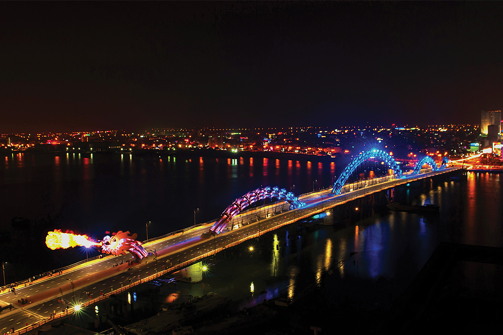
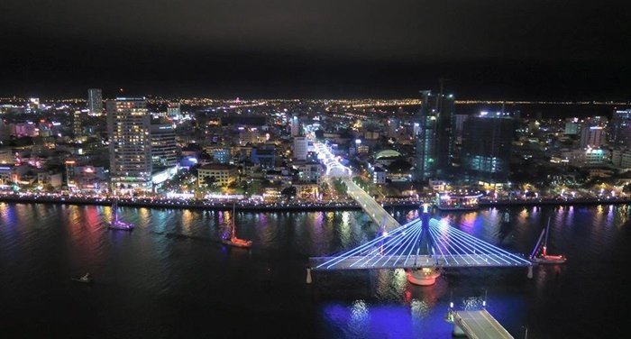
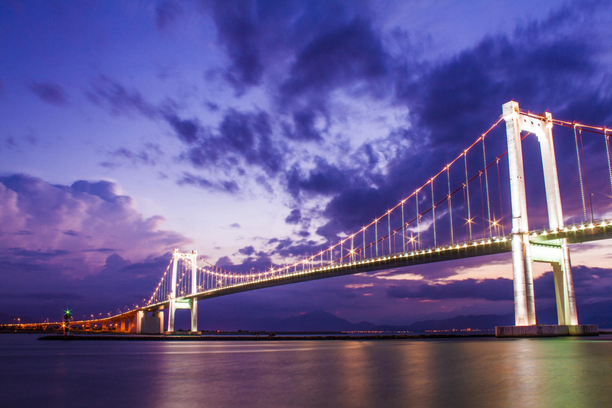

Nestled in the heart of Vietnam, Da Nang boasts a skyline adorned with breathtaking bridges that seamlessly blend beauty and cultural significance. These architectural marvels not only serve as vital transportation links but also stand as iconic landmarks, each with its own story to tell.
From the gracefully illuminated Dragon Bridge, symbolizing power and prosperity, to the timeless beauty of the Han River Bridge, the bridges of Da Nang are a testament to the city's rich heritage and modern dynamism. Join us on a journey through the enchanting bridges of Da Nang, where engineering meets artistry, and every crossing becomes a memorable experience.
Cầu Quay Sông Hàn, or the Han River Swing Bridge, stands as a mesmerizing gateway to the enchanting city of Da Nang. This architectural marvel, beautifully captured in its Vietnamese name, connects the vibrant districts of the city and symbolizes the harmonious blending of tradition and modernity. By day, it serves as a crucial river crossing, and by night, it transforms into a captivating spectacle with its unique swinging mechanism and captivating lighting display. The bridge is not only a testament to Da Nang's engineering prowess but also an integral part of its cultural identity.
As the sun sets and the city lights come to life, Cầu Quay Sông Hàn emerges as a captivating spectacle, casting its reflections upon the gentle ripples of the Han River. This iconic bridge becomes a focal point, not only for its practical purpose in connecting neighborhoods but also for the poetic dance it performs in the nighttime skyline. The swinging mechanism, a feat of engineering ingenuity, allows the bridge to pivot gracefully, creating an ever-changing panorama. Each swing is a metaphorical nod to the city's ability to pivot between its rich heritage and the contemporary dynamism that defines it today. Beyond its functional role, Cầu Quay Sông Hàn becomes a canvas for artistic expression through its enchanting lighting. The vibrant hues that adorn the bridge at night tell a visual story, celebrating the cultural richness and diversity of Da Nang.
Thuan Phuoc Bridge, spanning the Han River in Da Nang, Vietnam, holds significant cultural and symbolic meaning for the local community. The name "Thuan Phuoc" itself carries profound significance in Vietnamese: Thuan (Thuận): The word "Thuan" translates to harmony or favorable conditions. This reflects the idea of the bridge bringing harmony to the city's transportation network and contributing to the overall development of Da Nang.Phuoc (Phước): "Phuoc" conveys the notion of prosperity and good fortune. Naming the bridge with "Phuoc" suggests a wish for the well-being and prosperity of the city and its residents.
Therefore, the name Thuan Phuoc Bridge encapsulates the aspirations for a harmonious and prosperous city. Beyond its functional role as a transportation link, the bridge becomes a symbol of unity, progress, and the shared hopes for a thriving future in Da Nang.
Nguyễn Văn Trỗi Bridge and Trần Thị Lý Bridge, two prominent landmarks in Da Nang, contribute to the city's architectural splendor and cultural narrative. Nguyễn Văn Trỗi Bridge, named after a Vietnamese revolutionary martyr, stands as a symbol of courage and patriotism. With its distinctive bow-shaped design and vibrant illumination, the bridge not only facilitates transportation across the Han River but also serves as a reminder of the city's historical resilience. On the other hand, Tran Thi Ly Bridge, known for its elegant sail-shaped structure, adds a touch of modernity to Da Nang's skyline. Named after a local heroine, the bridge exudes grace and sophistication. Its innovative design allows for smooth navigation on the river while captivating onlookers with its nighttime lighting display. Together, Nguyễn Văn Trỗi Bridge and Trần Thị Lý Bridge represent a harmonious blend of history and contemporary vision, embodying Da Nang's commitment to honoring its past while embracing the future.